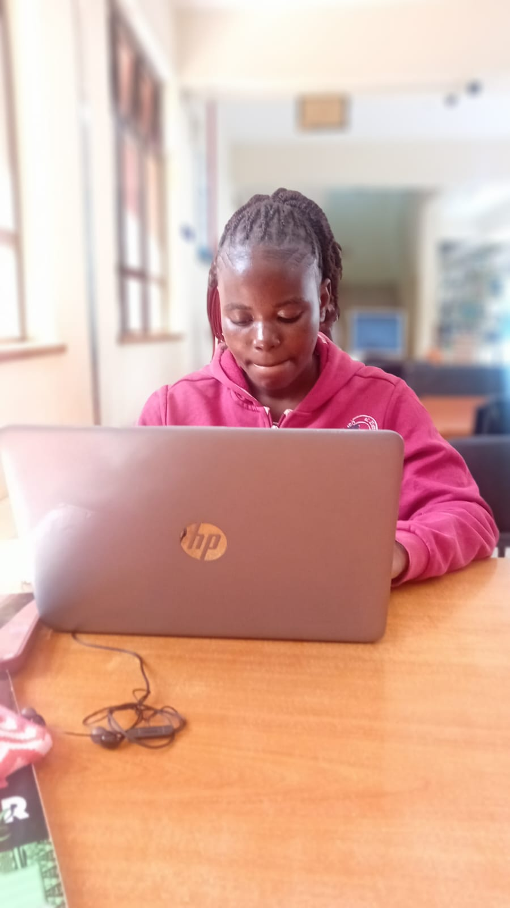

Welcome to My Personal Website

About Me
My name is Stella Deche. I am a Bachelor of Science in Information Technology student at Kisii University.
I am a passionate and ambitious technology enthusiast with a strong interest in software engineering, web development, database management and emerging technologies. I enjoy exploring technological innovations and developing solutions that address real-world challenges.
My background and experiences have strengthened my desire to become a competent software engineer capable of designing, developing and maintaining innovative technology solutions.
After completing my degree, I aspire to advance my career in software engineering and data engineering, gain professional industry experience, pursue continuous learning and eventually establish innovative technology solutions that create meaningful impact in society.